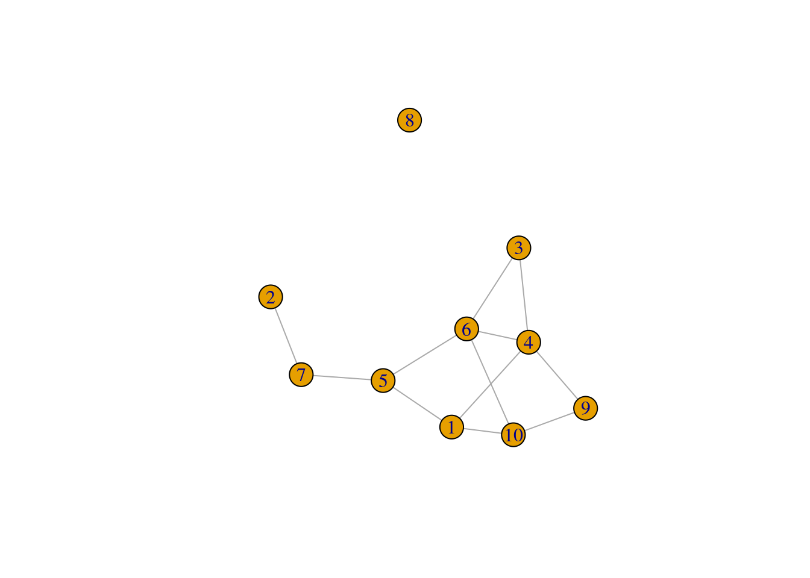
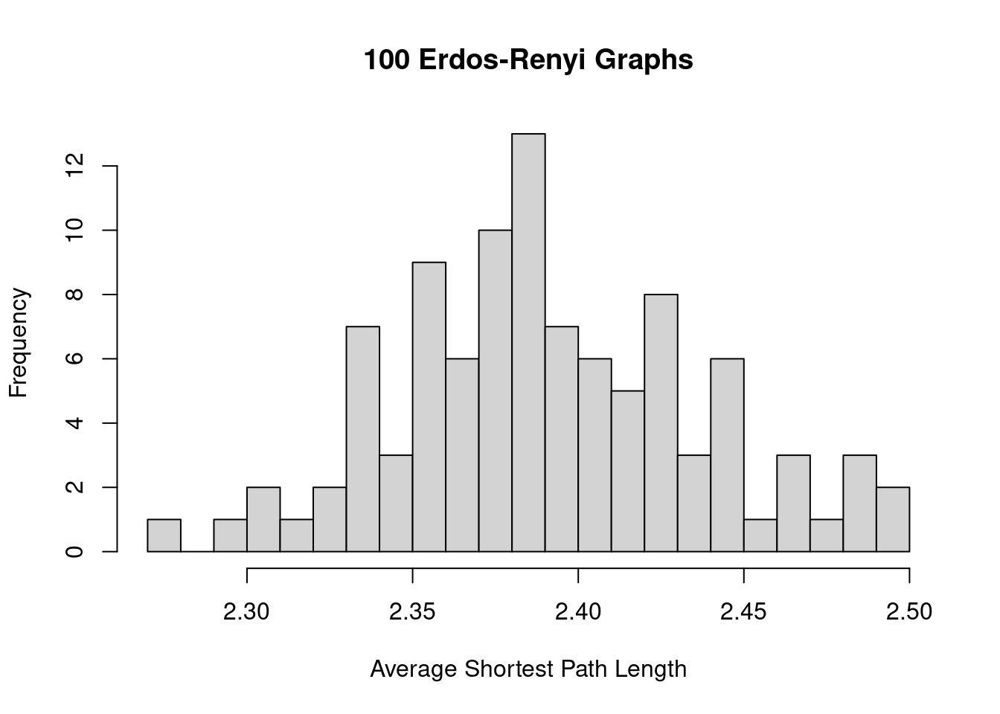
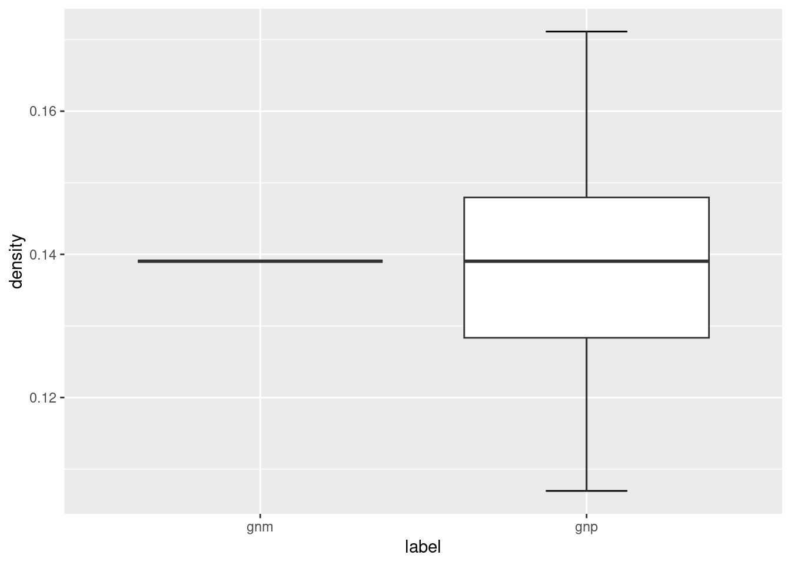
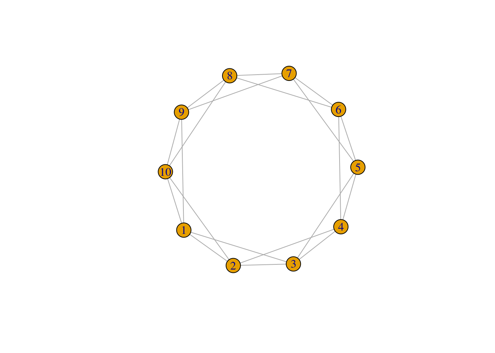
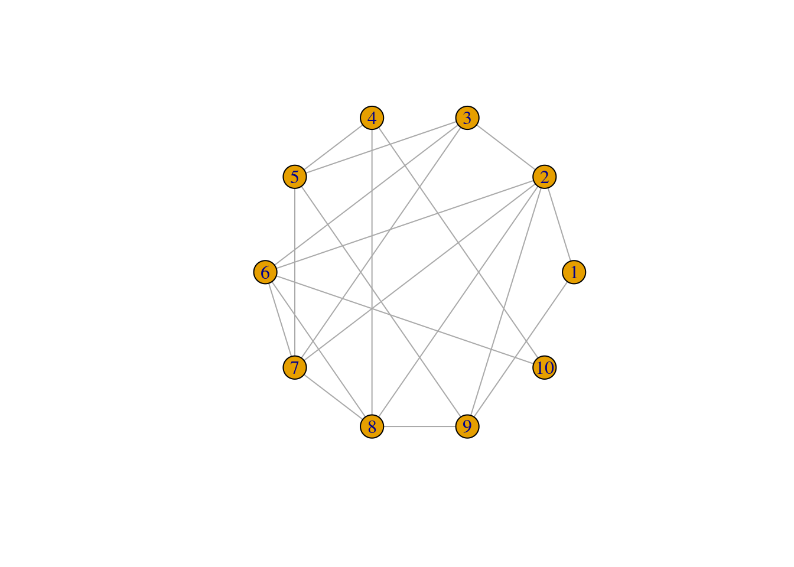
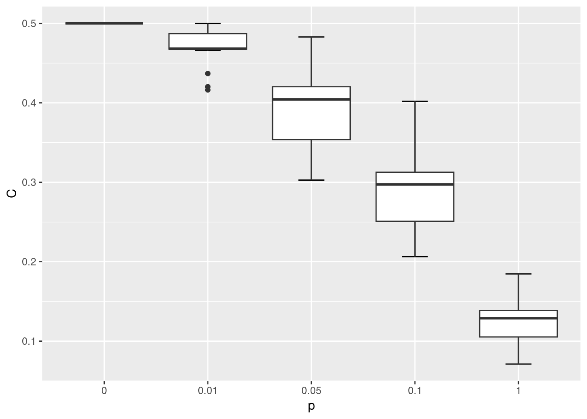
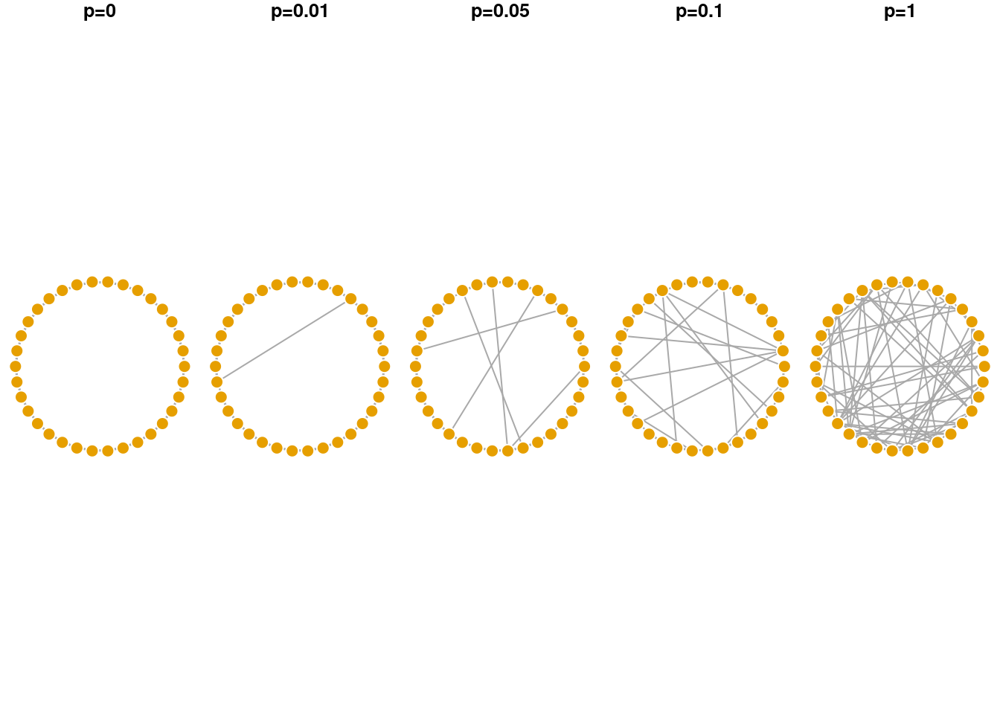
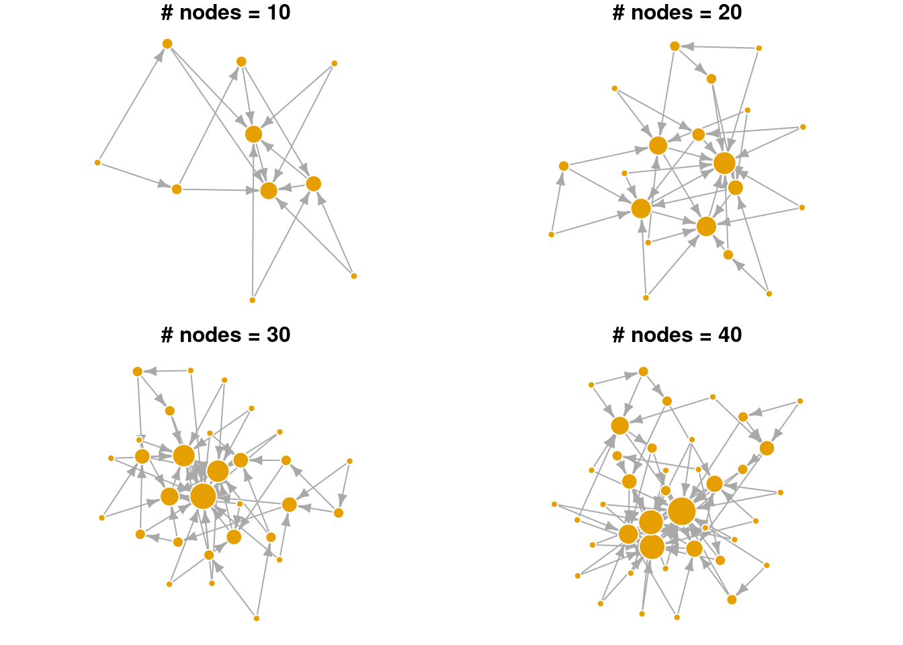
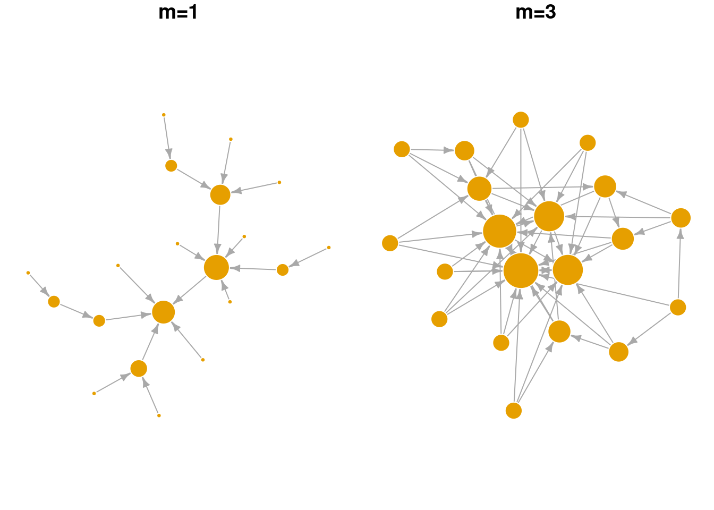
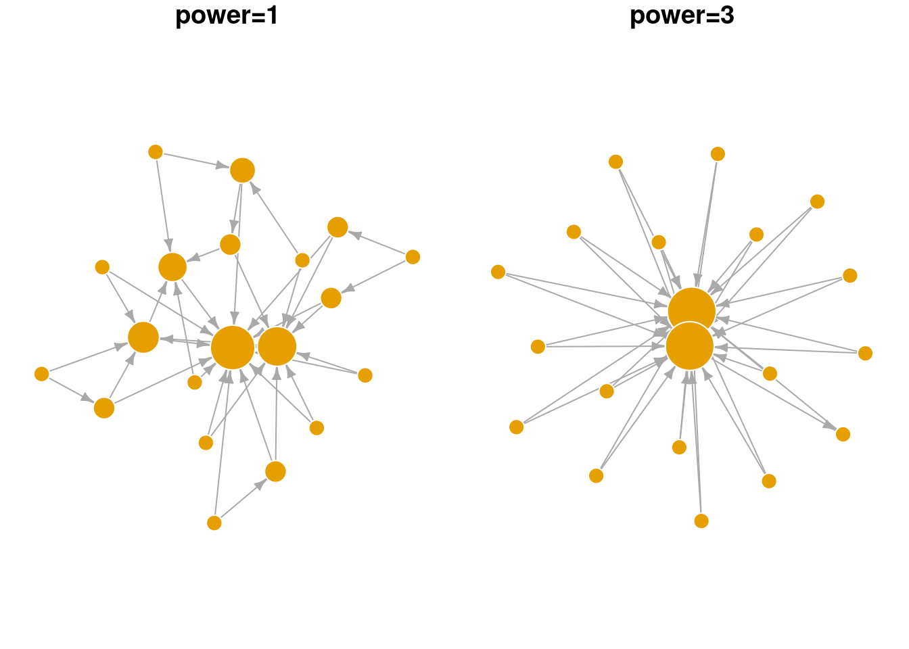

Chapter 9 Chapter 9: Network models
In most cases, we want to create a network representation out of real-world data sets so that we can study real-world phenomena. However, it is still a useful exercise to study generative network models and compare their characteristics to our network of interest. Generative networks are abstract graph representations that do not represent any real world information, but are generated from simple rules and assumptions.
Why is it useful to study network models when we are interested in the structure of social networks or brain anatomy? Let’s say we observe that a particular brain network has a small world structure–is its small worldness a distinctive, important feature of this network, or would it also emerge from a random generative process (say, random assignment of edges or rewiring of edges in a lattice network)? If we also see the same level of small worldness in a generative network model of similar network size, it suggests that it is a network feature that does not require any special mechanism or explanation for its presence. On the other hand, if the random network model is not a small world network, it suggests that small worldness is a feature of brain networks that cannot be readily explained by a random model, and instigates us to explore other models or mechanisms or explanations for its emergence.
In this chapter, let’s use the familiar karate network as our target network, and create various network models to compare against. We will focus on three generative network models for now: Erdos-Renyi networks, Watts-Strogatz networks (small world), and Barabasi-Albert networks (preferential attachment).
## This graph was created by an old(er) igraph version.
## ℹ Call `igraph::upgrade_graph()` on it to use with the current igraph version.
## For now we convert it on the fly...## IGRAPH 4b458a1 UNW- 34 78 -- Zachary's karate club network
## + attr: name (g/c), Citation (g/c), Author (g/c), Faction (v/n), name (v/c), label (v/c), color (v/n), weight (e/n)9.1 Erdos-Renyi Network Model
The Erdos-Renyi network is the simplest network model: All you need to do is to specify the number of nodes and edges (or density of the graph), and edges are placed randomly between node pairs. There are two ways to create an ER network.
Method 1. Using the sample_gnm function: where you need to specify the exact number of nodes (n) and the exact number of edges (m).
set.seed(1)
# This creates a ER network with 10 nodes and 12 edges
ger1 <- sample_gnm(n = 10, m = 12)
plot(ger1)
We’ll want to create a set of ER networks, say, 100 of them, that have the same number of nodes and edges as our karate network. What the code does is to regenerate the ER network and save each instance in a list object called ger100.
ger100 <- list()
set.seed(1)
for(i in 1:100) {
ger100[[i]] <- sample_gnm(n = gorder(karate), m = gsize(karate))
}Then we can compare the average network measures of the ER graphs against the observed values for the target graph. The code below shows an example of how the ASPL varies among the 100 ER graphs, and the ASPL of the karate network (5.75) is substantially larger than what is observed among the ER graphs.
sapply(ger100, mean_distance) |>
hist(breaks = 20, xlab = 'Average Shortest Path Length',
main = '100 Erdos-Renyi Graphs')
Method 2. Using the sample_gnp function: where you need to specify the exact number of nodes (n) and the probability that an edge is created (p).
set.seed(1)
# This creates a ER network with 10 nodes and 50% chance that an edge is created
ger2 <- sample_gnp(n = 10, p = 0.5)
plot(ger2)To create the ER graphs for comparing against the karate network, we need to decide on a value of p. For the value of p, we’ll use the network density of the karate network. Recall that network density is a measure of the number of actual edges to the number of possible edges–and so this can be used as a proxy for the probability that an edge is created among node pairs in the graph.
Notice that the ER graphs created using the sample_gnp function leads to ER graphs having slightly different number of edges (and hence network density), whereas the edges of ER graphs created using the sample_gnm function remains constant.
ger200 <- list()
set.seed(1)
for(i in 1:100) {
ger200[[i]] <- sample_gnp(n = gorder(karate), p = edge_density(karate))
}
library(ggplot2)
# we use ggplot2 to help make the visualizations
ger_plot <- data.frame(
edges = c(sapply(ger100, gsize), sapply(ger200, gsize)),
density = c(sapply(ger100, edge_density), sapply(ger200, edge_density)),
label = c(rep('gnm', 100), rep('gnp', 100))
)
ggplot(ger_plot, aes(x = label, y = edges)) +
stat_boxplot(geom = "errorbar", # Error bars
width = 0.25) + # Bars width
geom_boxplot()
ggplot(ger_plot, aes(x = label, y = density)) +
stat_boxplot(geom = "errorbar", # Error bars
width = 0.25) + # Bars width
geom_boxplot()
The ER network model serves as the simplest baseline model that you could compare your target network against. For a given macro-level measure that you are interested in, does its value fall within the range of values found in the simulated ER networks? If it does, it suggests that that particular network feature or property can be readily accounted for by a simple random graph where edges are placed randomly, and there is no need to invoke a more complicated reason or explanation for it. If it doesn’t, it suggests that that particular network feature or property is not something that is easily accounted for by random assignment of edges, and may be an interesting feature to look into. Chapter 6.4 (Small World Index) provides a neat example of how the ER network model is used as a benchmark to quantify the “small-worldness” of a target network.
This logic generally applies to other target networks, other network models, and any network measure that you are keen to investigate further.
9.2 Watts-Strogatz Network Model
Small-world networks are networks that have high local clustering coefficients (higher than one would expect from an ER random graph of the same size and density) and with relatively short average path length. In other words, these small world networks provide both local clustering and connectivity across distant nodes. Chapter 6.4 (Small World Index) discusses how you can measure the “small-worldness” of networks, but here we focus on generating simulated networks that have small world properties based on the model of Watts and Strogatz.
The model is initialized by a regular lattice network, where all nodes have the same degree to begin with. Below we have a network with 10 nodes (size) and each node is connected to 2 (nei) of its neighboring nodes. Because the rewiring probability is p = 0, we are not changing or rewiring the edges of this network yet. The lattice network is a simplified depiction of a network with high levels of local clustering.
## IGRAPH 0311787 U--- 10 20 -- Watts-Strogatz random graph
## + attr: name (g/c), dim (g/n), size (g/n), nei (g/n), p (g/n), loops (g/l), multiple (g/l)## [1] 1.666667## [1] 0.5## [1] 4
The model states that as p increases, more of the edges in the lattice network are rewired in such a way that distant nodes becomes connected and it reduces the ASPL of the network.
Let’s increase the rewiring probability and see how it changes the WS network:
## IGRAPH e746e69 U--- 10 20 -- Watts-Strogatz random graph
## + attr: name (g/c), dim (g/n), size (g/n), nei (g/n), p (g/n), loops (g/l), multiple (g/l)## [1] 1.622222## [1] 0.4133333## [1] 4
We observe that both the ASPL and global clustering coefficient has decreased relative to the first network. When p = 1 the network simply becomes a ER random network.
Below we will simulate the WS network model with the same number of nodes as the karate network, at varying rewiring probabilities {0, 0.01, 0.05, 0.1, 1}. We won’t be able to fully match the WS network on the number of edges, but with nei=2 the average degree of these networks will be 4 and relatively close to the average degree of the karate network which is 4.6.
gws0 <- list()
gws1 <- list()
gws2 <- list()
gws3 <- list()
gws4 <- list()
for(i in 1:20) {
gws0[[i]] <- sample_smallworld(1, gorder(karate), 2, 0)
gws1[[i]] <- sample_smallworld(1, gorder(karate), 2, 0.01)
gws2[[i]] <- sample_smallworld(1, gorder(karate), 2, 0.05)
gws3[[i]] <- sample_smallworld(1, gorder(karate), 2, 0.1)
gws4[[i]] <- sample_smallworld(1, gorder(karate), 2, 1)
}Let’s compare how the ASPL and C changed as the rewiring probability increased.
wsm <- data.frame(
C = c(sapply(gws0, transitivity, type = 'global'),
sapply(gws1, transitivity, type = 'global'),
sapply(gws2, transitivity, type = 'global'),
sapply(gws3, transitivity, type = 'global'),
sapply(gws4, transitivity, type = 'global')
),
L = c(sapply(gws0, mean_distance),
sapply(gws1, mean_distance),
sapply(gws2, mean_distance),
sapply(gws3, mean_distance),
sapply(gws4, mean_distance)),
p = c(rep('0', 20), rep('0.01', 20), rep('0.05', 20), rep('0.1', 20), rep('1', 20))
)
ggplot(wsm, aes(x = p, y = C)) +
stat_boxplot(geom = "errorbar", # Error bars
width = 0.25) + # Bars width
geom_boxplot()
ggplot(wsm, aes(x = p, y = L)) +
stat_boxplot(geom = "errorbar", # Error bars
width = 0.25) + # Bars width
geom_boxplot()lc <- layout_in_circle(gws0[[1]])
par(mfrow=c(1,5), mar=c(0,0,1,0)+.1) # space in top
plot(gws0[[1]], layout = lc, main='p=0', vertex.label = NA, vertex.frame.color = 'white')
plot(gws1[[1]], layout = lc, main='p=0.01', vertex.label = NA, vertex.frame.color = 'white')
plot(gws2[[1]], layout = lc, main='p=0.05', vertex.label = NA, vertex.frame.color = 'white')
plot(gws3[[1]], layout = lc, main='p=0.1', vertex.label = NA, vertex.frame.color = 'white')
plot(gws4[[1]], layout = lc, main='p=1', vertex.label = NA, vertex.frame.color = 'white')
As shown in the visualization above, when p = 0 the lattice network is regular, where each node has the same degree and is equidistant from all other nodes. When p = 1 the network becomes fully disordered. In between, networks show the small world characteristic where they are more clustered than a random equivalent even though their path lengths are relatively short.
9.3 Preferential Attachment Network Growth Model (Barabasi-Albert Network Model)
The preferential attachment model was first proposed by Barabasi & Albert to provide a mechanistic explanation of the power law degree distribution commonly observed in real world networks. In their model, the network begins with a single node and new nodes are added sequentially to the network. The new node preferentially attaches to existing nodes in the network that have higher degree (i.e., more edges). In this way, nodes that are already rich with edges, tend to acquire new edges from the incoming nodes. Over time, the final network has a degree distribution that follows a power law, where few nodes are hubs in the network, and many nodes have few connections.
plot_nicely <- function(network) {
set.seed(5) # fix random seed for net viz algo
plot(network, vertex.frame.color = 'white', edge.arrow.size = 0.5, # adjust arrow size, node frame color
layout = layout_with_lgl, # net viz layout algorithm
vertex.label = NA, vertex.size = log(degree(network))*8, # no node names, size is yoked to its degree
main = paste0('# nodes = ', gorder(network))) # label
}
# plot
par(mar=c(0,0,1,0)+.1, mfrow = c(2,2))
# reduce margins, ensure 2 rows and 2 columns
set.seed(1)
g1 <- sample_pa(n=10, power = 1, m = 2)
plot_nicely(g1)
g2 <- sample_pa(n=20, power = 1, m = 2,
start.graph = g1) # use previous graph as the starter
plot_nicely(g2)
g3 <- sample_pa(n=30, power = 1, m = 2, start.graph = g2)
plot_nicely(g3)
g4 <- sample_pa(n=40, power = 1, m = 2, start.graph = g3)
plot_nicely(g4)
In the visualization above, notice that nodes that entered the network earlier are more likely to gain many connections (larger node sizes correspond to higher degree). Hence, nodes that are already “rich”, tend to continue gaining new edges easily in later time steps (get “richer”). Even in a small network, we can see that the degree distribution is highly skewed. Relatively few nodes have high degree, most nodes have low degree. Edges are directed in this network model, pointing from the newly added node to the existing node.
Below we explore the arguments in the sample_pa function and show how they change the overall network structure. n refers to the number of nodes in the network. m refers to the number of new edges that an incoming node is given to attach to existing node(s). power is a parameter that weights the strength of the preferential attachment. If power=1 then the probability of attaching to an existing node is a linear function of its degree. If power is larger than 1, existing nodes with higher degree are even more likely to attract new nodes. As seen in the visualization below, BA networks grown with a high power leads to a situation that only a small handful of nodes receive most of the new edges.
plot_nicely2 <- function(network, text) {
set.seed(5) # fix random seed for net viz algo
plot(network, vertex.frame.color = 'white', edge.arrow.size = 0.5, # adjust arrow size, node frame color
layout = layout_with_lgl, # net viz layout algorithm
vertex.label = NA, vertex.size = 3+log(degree(network))*8, # no node names, size is yoked to its degree
main = text) # label
}
par(mar=c(0,0,1,0)+.1, mfrow = c(1,2))
# changing m, number of new edges
sample_pa(n=20, power = 1, m = 1) |> plot_nicely2(text = 'm=1')
sample_pa(n=20, power = 1, m = 3) |> plot_nicely2(text = 'm=3')
par(mar=c(0,0,1,0)+.1, mfrow = c(1,2))
# changing power, strength of the pref. attachment
sample_pa(n=20, power = 1, m = 2) |> plot_nicely2(text = 'power=1')
sample_pa(n=20, power = 3, m = 2) |> plot_nicely2(text = 'power=3')
9.4 Exercise
For Q1 and 2, we’ll use the UKfaculty network from the igraphdata library.
Compare the ASPL and global clustering coefficient of the
UKfacultynetwork against the Erdos-Renyi random network model. What do your results imply?Compare the community structure of the
UKfacultynetwork against the Erdos-Renyi random network model. What do your results imply?Let’s assume that Mark conducted an analysis of the word association network and found that (i) the degree distribution followed a power law with an exponent of ~3 and (ii) it had a modularity, Q, of 0.4. How would Mark use the preferential attachment model to create a generative network with a similar degree distribution and compare its modularity to the word association network?
What happens when
powerin thesample_pafunction is set to less than 1 (but larger than 0)? How would you test the behavior of this parameter?